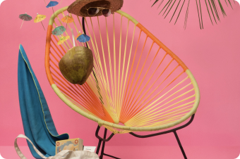

Easy steps
-
1
How Startup Framework works?
The Generator App is an online tool that helps you to export ready-made templates ready to work as your future website. It helps you to combine slides, panels and other components and export it as a set of static files: HTML/CSS/JS.
-
2
Twenty five awesome samples
The most important part of the Startup Framework is the samples. The samples form a set of 25 usable pages you can use as is or you can add new blocks from UI Kit. By choosing one of the 25 configurations of the future startup, the process of creation is simple and easy.
Fell our design
Startup Design Framework contains components which can easily be inte-grated into almost any design.
-
3
Variety of designs
You can decide whether to create your site using UI Kit blocks or samples. The blocks can merge together in various combinations.